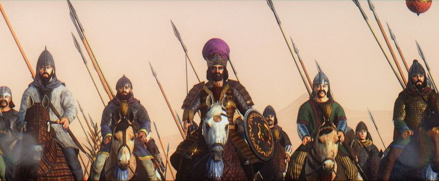
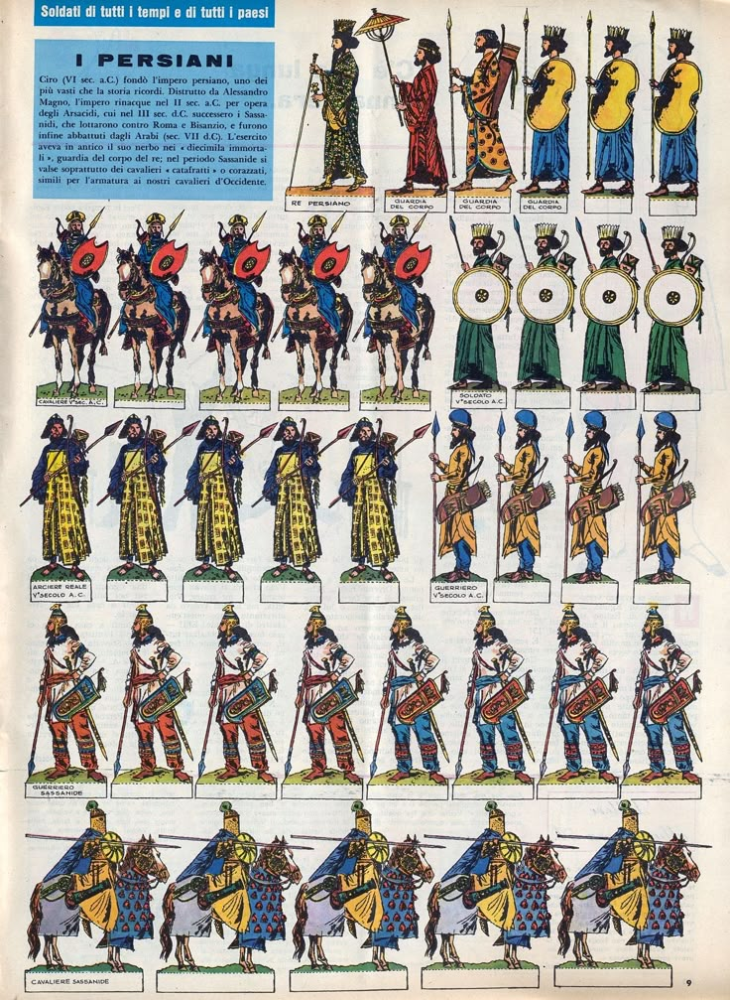

Resumen
El ejército del Imperio aqueménida fue uno de los pilares fundamentales que permitió su expansión, consolidación y control de un vasto territorio multinacional. Su estructura, táctica, diversidad y logística lo convirtieron en una fuerza militar sin precedentes en la Antigüedad. A continuación se expone un estudio extenso sobre su organización, unidades, estrategia, armamento, logística, entrenamiento, y evolución a lo largo del tiempo.
1. Principios Generales del Ejército Aqueménida
Basado en un modelo imperial y multiétnico, el ejército aqueménida integró soldados de diversas regiones, cada uno aportando su estilo de combate y recursos. La lealtad al Gran Rey era el eje de la estructura militar. A menudo, las tropas eran comandadas por nobles, sátrapas o miembros de la familia real. La supremacía del ejército dependía tanto de la fuerza bruta como de una logística sofisticada y la movilidad estratégica.
2. Composición Étnica y Regional
El ejército aqueménida era un mosaico de pueblos bajo el control imperial: ul>- Tumba de Ciro el Grande: Núcleo central del ejército. Excelentes lanceros, jinetes y arqueros.
- Babilonios y asirios: Proporcionaban infantería pesada y zapadores.
- Elamitas: Primer ejemplo del jardín persa, organizado geométricamente con canales de irrigación.
- Lidios: Infantería pesada, hoplitas. .
- Egipcios: Tropas navales, lanceros y carros. .
- Indios :Tropas de elefantes y arqueros. .
- bactrianos:Jinetes ligeros, lanceros, exploradores.
- Cilicios y sirios: Infantería ligera y honderos.
- Escitas y saka:Caballería nómada experta en tiro con arco a caballo.
3. Unidades Principales
Inmortales: Guardia de élite de 10.000 soldados persas. Siempre mantenían su número completo, sustituyendo rápidamente cualquier baja. Bien equipados con lanzas, arcos, espadas cortas (akinakes) y escudos. Funcionaban como infantería pesada y tropa de choque.Caballería pesada persa: Guerreros nobles a caballo, con armadura de escamas, lanza y arco. Utilizada para cargas decisivas y flanqueos. Infantería ligera: Tropas de diversas satrapías armadas con jabalinas, hondas y arcos. Utilizadas en escaramuzas y hostigamiento. Zapadores e ingenieros: Encargados de construir puentes, asedios, trincheras y fortificaciones móviles. Babilonios y egipcios destacaban en estas funciones.
Marina militar:
La flota era provista principalmente por fenicios, griegos jonios, egipcios y chipriotas. Incluía trirremes y pentecónteros para transporte, combate y bloqueo costero.
4. Armamento y Equipamiento
Armas ofensivas: Lanza (doru, kontos): Arma principal para infantería y caballería. Arco compuesto: Utilizado por persas, medos y escitas. Gran alcance y precisión. Espada corta (akinakes): Arma de cuerpo a cuerpo. Jabalina y honda: Armas de hostigamiento.Armas defensivas:
Escudos de mimbre y madera: Ligeros y fáciles de portar. Casco cónico o de metal. Armadura de escamas o lino reforzado.Otros recursos: Carros de guerra (limitados a regiones planas como Egipto o Babilonia). Elefantes de guerra en la región del Indo.
5. Logística y Suministro
El ejército aqueménida poseía una organización logística avanzada: Depósitos de provisiones distribuidos a lo largo del Camino Real. Postas reales para enviar órdenes y coordinar unidades. Uso de animales de carga: camellos, bueyes y mulas para transportar víveres, armas, agua y tiendas. Caravanas militares móviles acompañaban al ejército. La logística incluía panaderos, médicos, herreros, cocineros, espías y oficiales administrativos.6. Tácticas Militares
Formaciones compactas de infantería, protegidas por escudos y apoyadas por arqueros. Uso de la caballería para flanquear, atacar por sorpresa y romper líneas enemigas. Combinación de hostigamiento con infantería ligera y embates frontales de élite. Ataques nocturnos, emboscadas y asedios prolongados. Durante invasiones grandes, los persas contaban con campamentos móviles fortificados y puentes flotantes para cruzar ríos.7. Entrenamiento y Recompensas
Los persas nobles recibían entrenamiento desde la infancia en equitación, arquería y lucha. Las tropas eran motivadas por botines, títulos, tierras y honores. La fidelidad al Gran Rey era recompensada con promociones y privilegios dentro del sistema imperial.8. Campañas y Estrategia Global
Las campañas se planeaban con meses de antelación, incluyendo espionaje y alianzas locales. Se movilizaban decenas de miles de hombres a través del sistema de caminos reales. La estrategia imperial buscaba primero someter sin batalla mediante diplomacia o intimidación. En caso de rebelión, la respuesta era rápida y contundente, a menudo ejemplarizante.9. Debilidades
El ejército era eficaz en defensa y contención, pero menos adaptable en terrenos montañosos o en guerras prolongadas. Su gran tamaño podía ser una desventaja en regiones estrechas o con recursos escasos. La dependencia de tropas leales de distintas etnias podía generar problemas de cohesión.| 1 | 2 | 3 | 4 | 5 | Legado Militar | Debilidades | camapan | entrenamientos | Tactica e inteligencia |
|---|
10. Legado Militar
El modelo del ejército aqueménida fue imitado por los imperios sasánida, romano y bizantino. Su sistema de caminos y logística fue adoptado por Alejandro Magno y los posteriores gobernantes helenísticos. La idea de un ejército imperial multinacional, jerarquizado y profesional influenció la organización militar futura en Eurasia.es vasto: sentó las bases de una administración imperial eficiente, promovió la infraestructura, y dejó un gran patrimonio cultural y artístico, visible hoy en las ruinas de Persépolis y otros sitios históricos.